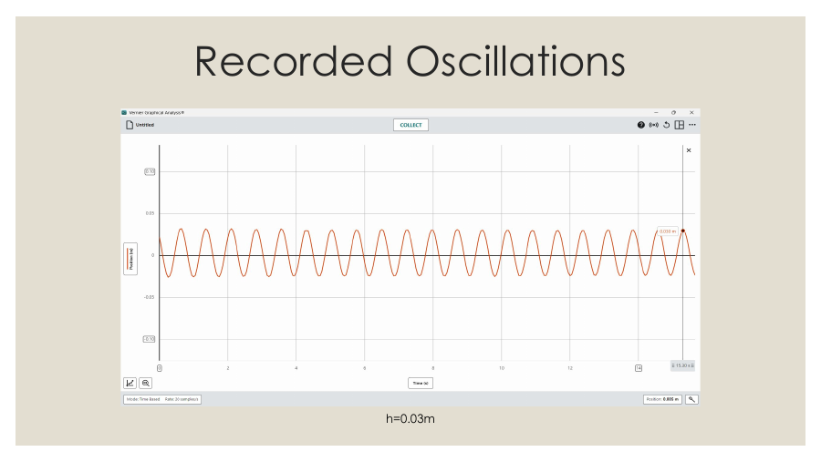
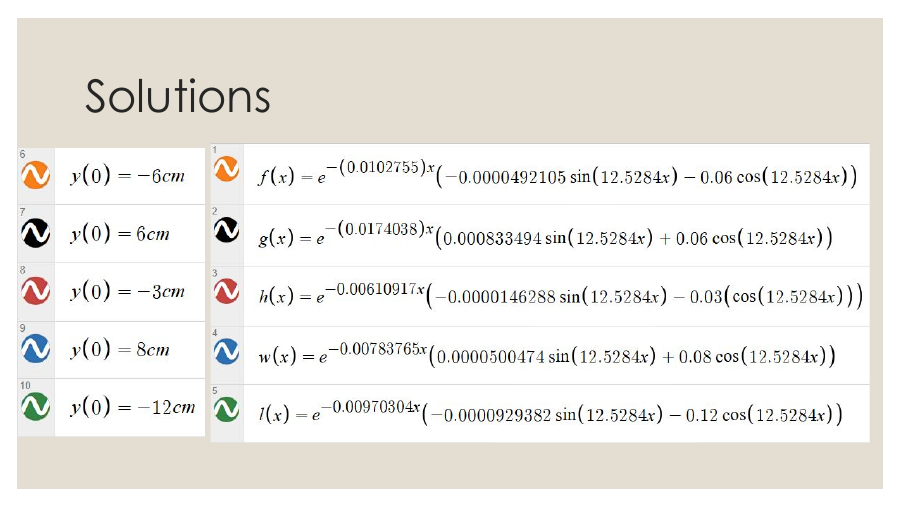

PHYSICS LAB · MODELING
Mass–spring system.
Modeling a damped oscillation from measured motion and comparing five starting positions.

THE QUESTION
How does starting position change a damped oscillation?
We suspended masses from a spring and used their equilibrium displacement to estimate the spring constant. A motion detector recorded the motion after release from different initial heights.
We estimated a damping coefficient, solved the resulting differential equations, and graphed the solutions for five initial positions, both positive and negative. The measured motion and solutions supported an underdamped model.
The experiment also made model limitations visible: the mass could swing sideways, the detector might see both weights, table vibration could affect readings, and our equations treated the spring as massless.
We worked as equal members of the lab group, sharing the tasks that needed to be done throughout the experiment and presentation.

METHOD & ITERATION
From setup to evidence.
- Measure equilibrium displacement to estimate spring stiffness.
- Record motion with a detector and compare five initial heights.
- Use differential equations to connect the physical system to its graphs.
WHAT I TOOK AWAY
What the lab taught me.
The useful result was not just identifying underdamping. Comparing recorded movement with a model showed how assumptions and measurement conditions shape the answer.
← Back to projects